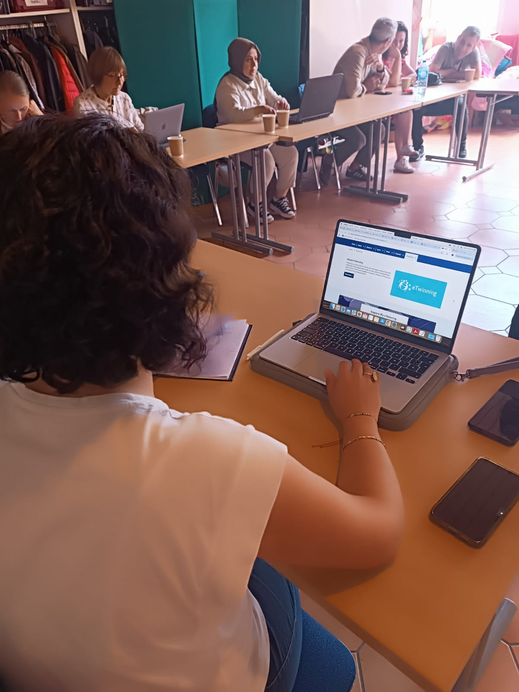
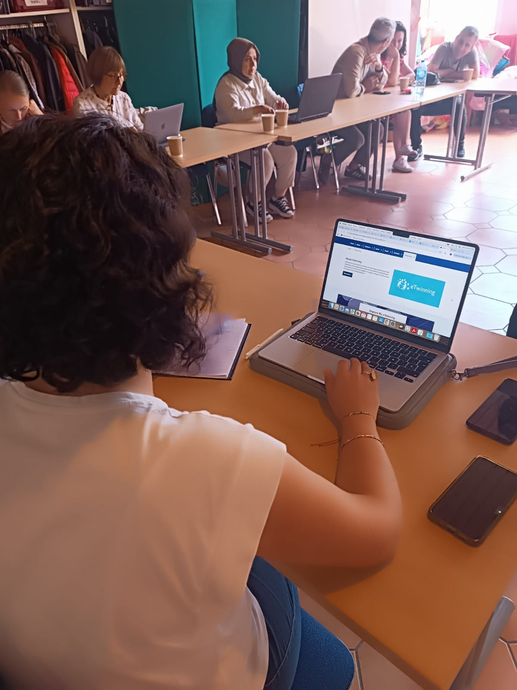
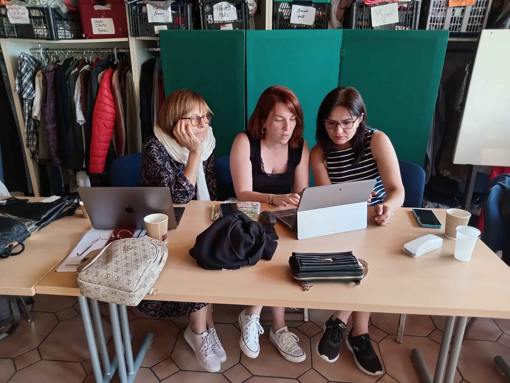
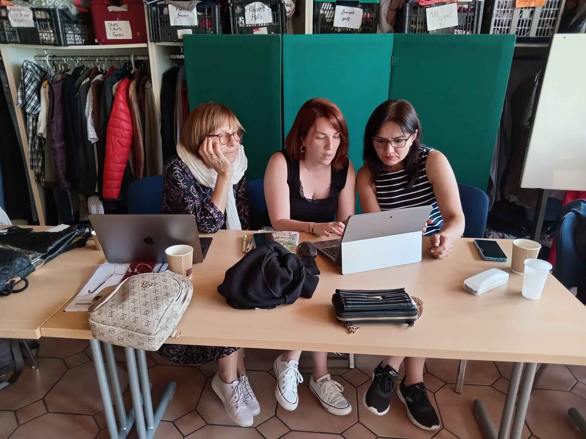
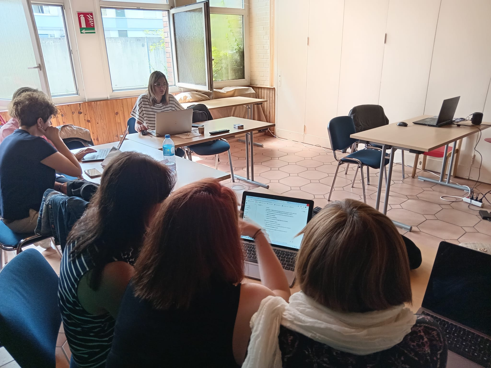
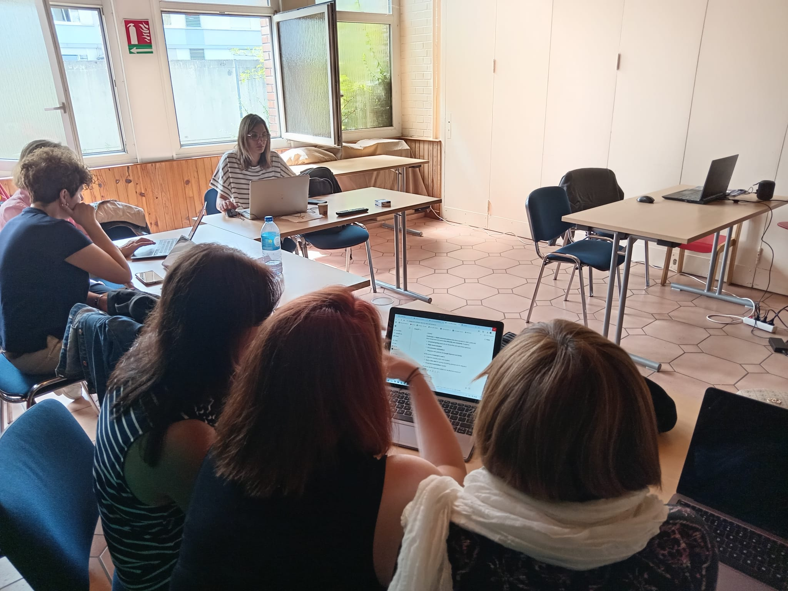
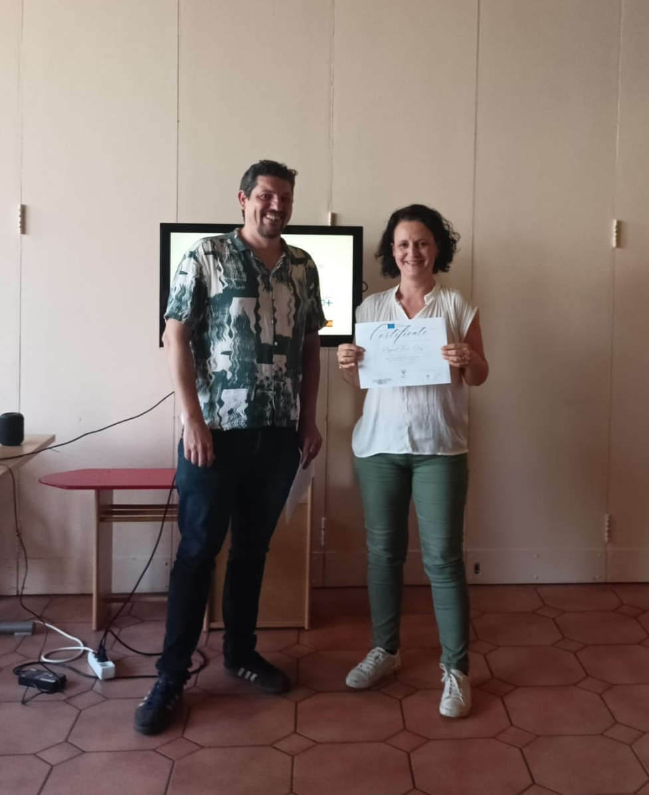
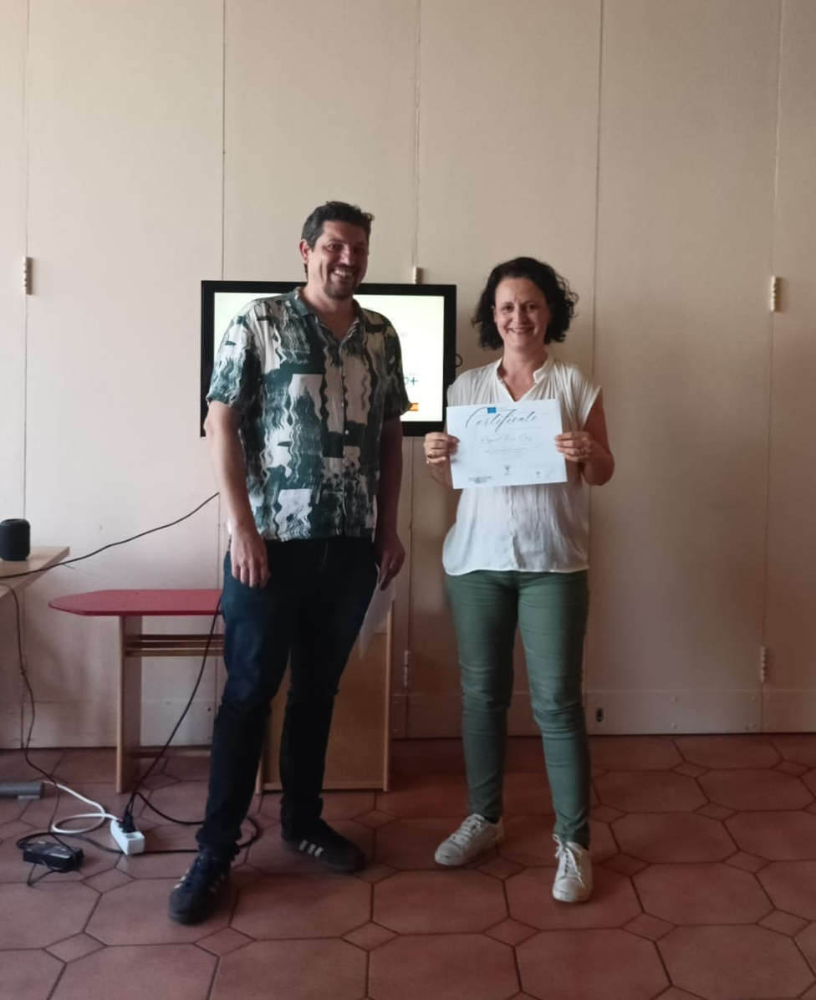

The "Smart Edu AI: A 5-Day Training Program for Youth Workers" is designed to empower educators and students through Artificial Intelligence. This international program, taking place from July 21st to 25th, 2025, in Strasbourg, France, involves partner organizations from Poland, Türkiye, France, and Spain, fostering global collaboration.
The program aims to provide practical training through hands-on workshops and group activities, focusing on pedagogical innovation and promoting responsible and sustainable AI use.
Overview & Key Topics
Here’s an overview of each day and its key topics:
Day 1: Building Foundations
Opening speeches, icebreakers, and partner presentations set the stage. Expert talks define AI and explore its applications in education, introducing key technologies like Machine Learning, NLP, and Computer Vision. Discussions focus on why AI matters in education—enhancing accessibility, efficiency, and engagement.

Day 2: Empowering Educators and Learners
Focuses on integrating AI into lessons using pedagogical models such as Gagné's 9 Events and the 5E Model. Training on AI-based educational tools like ChatGPT, Quizlet, and Google Classroom. Group activities explore student-centered AI applications.
 


Day 3: Managing Education with AI
Covers project management tools like Trello, Slack, and Asana for educational projects, along with AI-based performance tracking. Ethical considerations such as data privacy, bias, and transparency are key discussions.
 

Day 4: Learning by Doing
Hands-on AI workshops, AR/VR exploration, and gamification activities. Includes an AI for Data Analytics Workshop and discussions on how AI can support continuous teacher growth.


 

Day 5: Transforming Education with AI
Innovation contest, project presentations, and feedback sessions. Discussion on AI-based learning analytics, sustainable technology, and the future role of educators in an AI-powered world.


 



AI Training for Educators Summary (France)
1.AI-in-Education-A-5-Day-Training-Program-for-Youth-Workers
📄 Download Project Summary (PDF)2.What-is-AI-and-How-is-it-Used-in-Education?
📄 Download Project Summary (PDF)3.Integrating-AI-into-Instructional-Design-Enhancing-Youth-Work
📄 Download Project Summary (PDF)3.1.AI-Image-Generation-Tools-for-Education-and-Creation
📄 Download Project Summary (PDF)4.AI-Tools-Transforming-Education-A-Practical-Guide-for-Educators
📄 Download Project Summary (PDF)5.Mastering-Project-Management-Tools-Trello-and-Slack-for-Teachers-and-Youth-Workers
📄 Download Project Summary (PDF)6.AI-Powered-Tools-for-Student-Success
📄 Download Project Summary (PDF)7.Empowering-Youth-Work-with-AI-and-Digital-Tools
📄 Download Project Summary (PDF)8.AI-Tools-for-Youth-Work-Enhancing-Engagement-and-Development
📄 Download Project Summary (PDF)8.1.Ethics-and-Artificial-Intelligence-in-Education-Challenges-Issues-and-Perspectives
📄 Download Project Summary (PDF)8.2.Essential-Measures-for-Student-Data-Security-and-Confidentiality
📄 Download Project Summary (PDF)9.Technology-is-fundamentally-transforming-education
📄 Download Project Summary (PDF)10.Empowering-Teachers-with-AI-A-New-Era-of-Professional-Development
📄 Download Project Summary (PDF)11.Developing-Digital-Pedagogy-with-Artificial-Intelligence-How-AI-is-Transforming-Teaching-Methods
📄 Download Project Summary (PDF)12.AI-Supported-Teaching-Methods-Strategies-Enhanced-by-AI-and-Their-Classroom-Impact
📄 Download Project Summary (PDF)AI-for-Translation
📄 Download Project Summary (PDF)Best-AI-Tools-for-Learning-a-Language-in-2025
📄 Download Project Summary (PDF)Best-AI-tools-for-subtitling-videos-in-2025
📄 Download Project Summary (PDF)Best-AI-Video-Creation-Tools-for-Educators-in-2025
📄 Download Project Summary (PDF)